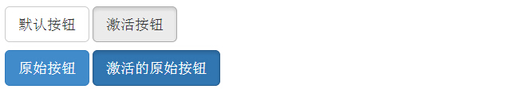

Bootstrap 按钮
本章将通过实例讲解如何使用 Bootstrap 按钮。任何带有 class .btn 的元素都会继承圆角灰色按钮的默认外观。但是 Bootstrap 提供了一些选项来定义按钮的样式，具体如下表所示：
以下样式可用于<a>, <button>, 或 <input> 元素上：
| 类 | 描述 | 实例 |
|---|---|---|
| .btn | 为按钮添加基本样式 | 实例 » |
| .btn-default | 默认/标准按钮 | 实例 » |
| .btn-primary | 原始按钮样式（未被操作） | 实例 » |
| .btn-success | 表示成功的动作 | 实例 » |
| .btn-info | 该样式可用于要弹出信息的按钮 | 实例 » |
| .btn-warning | 表示需要谨慎操作的按钮 | 实例 » |
| .btn-danger | 表示一个危险动作的按钮操作 | 实例 » |
| .btn-link | 让按钮看起来像个链接 (仍然保留按钮行为) | 实例 » |
| .btn-lg | 制作一个大按钮 | 实例 » |
| .btn-sm | 制作一个小按钮 | 实例 » |
| .btn-xs | 制作一个超小按钮 | 实例 » |
| .btn-block | 块级按钮(拉伸至父元素100%的宽度) | 实例 » |
| .active | 按钮被点击 | 实例 » |
| .disabled | 禁用按钮 | 实例 » |
下面的实例演示了上面所有的按钮 class：
<!DOCTYPE html> <html> <head> <title>Bootstrap 实例 - 按钮选项</title> <link rel="stylesheet" href="http://apps.bdimg.com/libs/bootstrap/3.3.0/css/bootstrap.min.css"> <script src="http://apps.bdimg.com/libs/jquery/2.1.1/jquery.min.js"></script> <script src="http://apps.bdimg.com/libs/bootstrap/3.3.0/js/bootstrap.min.js"></script> </head> <body> <!-- 标准的按钮 --> <button type="button" class="btn btn-default">默认按钮</button> <!-- 提供额外的视觉效果，标识一组按钮中的原始动作 --> <button type="button" class="btn btn-primary">原始按钮</button> <!-- 表示一个成功的或积极的动作 --> <button type="button" class="btn btn-success">成功按钮</button> <!-- 信息警告消息的上下文按钮 --> <button type="button" class="btn btn-info">信息按钮</button> <!-- 表示应谨慎采取的动作 --> <button type="button" class="btn btn-warning">警告按钮</button> <!-- 表示一个危险的或潜在的负面动作 --> <button type="button" class="btn btn-danger">危险按钮</button> <!-- 并不强调是一个按钮，看起来像一个链接，但同时保持按钮的行为 --> <button type="button" class="btn btn-link">链接按钮</button> </body> </html>
结果如下所示：

按钮大小
下表列出了获得各种大小按钮的 class：
| Class | 描述 |
|---|---|
| .btn-lg | 这会让按钮看起来比较大。 |
| .btn-sm | 这会让按钮看起来比较小。 |
| .btn-xs | 这会让按钮看起来特别小。 |
| .btn-block | 这会创建块级的按钮，会横跨父元素的全部宽度。 |
下面的实例演示了上面所有的按钮 class：
<!DOCTYPE html>
<html>
<head>
<title>Bootstrap 实例 - 按钮大小</title>
<link rel="stylesheet" href="http://apps.bdimg.com/libs/bootstrap/3.3.0/css/bootstrap.min.css">
<script src="http://apps.bdimg.com/libs/jquery/2.1.1/jquery.min.js"></script>
<script src="http://apps.bdimg.com/libs/bootstrap/3.3.0/js/bootstrap.min.js"></script>
</head>
<body>
<p>
<button type="button" class="btn btn-primary btn-lg">
大的原始按钮
</button>
<button type="button" class="btn btn-default btn-lg">
大的按钮
</button>
</p>
<p>
<button type="button" class="btn btn-primary">
默认大小的原始按钮
</button>
<button type="button" class="btn btn-default">
默认大小的按钮
</button>
</p>
<p>
<button type="button" class="btn btn-primary btn-sm">
小的原始按钮
</button>
<button type="button" class="btn btn-default btn-sm">
小的按钮
</button>
</p>
<p>
<button type="button" class="btn btn-primary btn-xs">
特别小的原始按钮
</button>
<button type="button" class="btn btn-default btn-xs">
特别小的按钮
</button>
</p>
<p>
<button type="button" class="btn btn-primary btn-lg btn-block">
块级的原始按钮
</button>
<button type="button" class="btn btn-default btn-lg btn-block">
块级的按钮
</button>
</p>
</body>
</html>
结果如下所示：

按钮状态
Bootstrap 提供了激活、禁用等按钮状态的 class，下面将进行详细讲解。
激活状态
按钮在激活时将呈现为被按压的外观（深色的背景、深色的边框、阴影）。
下表列出了让按钮元素和锚元素呈激活状态的 class：
| 元素 | Class |
|---|---|
| 按钮元素 | 添加 .active class 来显示它是激活的。 |
| 锚元素 | 添加 .active class 到 <a> 按钮来显示它是激活的。 |
下面的实例演示了这点：
<!DOCTYPE html>
<html>
<head>
<title>Bootstrap 实例 - 按钮激活状态</title>
<link rel="stylesheet" href="http://apps.bdimg.com/libs/bootstrap/3.3.0/css/bootstrap.min.css">
<script src="http://apps.bdimg.com/libs/jquery/2.1.1/jquery.min.js"></script>
<script src="http://apps.bdimg.com/libs/bootstrap/3.3.0/js/bootstrap.min.js"></script>
</head>
<body>
<p>
<button type="button" class="btn btn-default btn-lg ">
默认按钮
</button>
<button type="button" class="btn btn-default btn-lg active">
激活按钮
</button>
</p>
<p>
<button type="button" class="btn btn-primary btn-lg ">
原始按钮
</button>
<button type="button" class="btn btn-primary btn-lg active">
激活的原始按钮
</button>
</p>
</body>
</html>
结果如下所示：

禁用状态
当您禁用一个按钮时，它的颜色会变淡 50%，并失去渐变。
下表列出了让按钮元素和锚元素呈禁用状态的 class：
| 元素 | Class |
|---|---|
| 按钮元素 | 添加 disabled 属性 到 <button> 按钮。 |
| 锚元素 | 添加 disabled class 到 <a> 按钮。 注意：该 class 只会改变 <a> 的外观，不会改变它的功能。在这里，您需要使用自定义的 JavaScript 来禁用链接。 |
下面的实例演示了这点：
<!DOCTYPE html>
<html>
<head>
<title>Bootstrap 实例 - 按钮禁用状态</title>
<link rel="stylesheet" href="http://apps.bdimg.com/libs/bootstrap/3.3.0/css/bootstrap.min.css">
<script src="http://apps.bdimg.com/libs/jquery/2.1.1/jquery.min.js"></script>
<script src="http://apps.bdimg.com/libs/bootstrap/3.3.0/js/bootstrap.min.js"></script>
</head>
<body>
<p>
<button type="button" class="btn btn-default btn-lg">
默认按钮
</button>
<button type="button" class="btn btn-default btn-lg" disabled="disabled">
禁用按钮
</button>
</p>
<p>
<button type="button" class="btn btn-primary btn-lg ">
原始按钮
</button>
<button type="button" class="btn btn-primary btn-lg" disabled="disabled">
禁用的原始按钮
</button>
</p>
<p>
<a href="#" class="btn btn-default btn-lg" role="button">
链接
</a>
<a href="#" class="btn btn-default btn-lg disabled" role="button">
禁用链接
</a>
</p>
<p>
<a href="#" class="btn btn-primary btn-lg" role="button">
原始链接
</a>
<a href="#" class="btn btn-primary btn-lg disabled" role="button">
禁用的原始链接
</a>
</p>
</body>
</html>
结果如下所示：

按钮标签
您可以在 <a>、<button> 或 <input> 元素上使用按钮 class。但是建议您在 <button> 元素上使用按钮 class，避免跨浏览器的不一致性问题。
下面的实例演示了这点：
<!DOCTYPE html> <html> <head> <title>Bootstrap 实例 - 按钮标签</title> <link rel="stylesheet" href="http://apps.bdimg.com/libs/bootstrap/3.3.0/css/bootstrap.min.css"> <script src="http://apps.bdimg.com/libs/jquery/2.1.1/jquery.min.js"></script> <script src="http://apps.bdimg.com/libs/bootstrap/3.3.0/js/bootstrap.min.js"></script> </head> <body> <a class="btn btn-default" href="#" role="button">链接</a> <button class="btn btn-default" type="submit">按钮</button> <input class="btn btn-default" type="button" value="输入"> <input class="btn btn-default" type="submit" value="提交"> </body> </html>
结果如下所示：